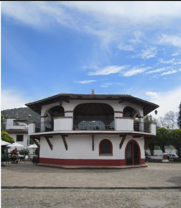
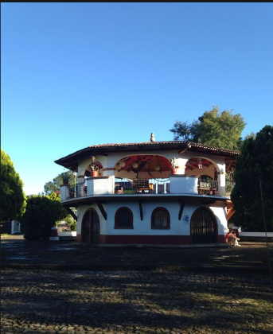

Pueblo magico que se pisa, historia que se lleva.

"Kiosco-Biblioteca de Valle de Bravo, el que sale en todos los videos de turismo local. No es el quiosco del jardín principal, es otro.Es un edificio circular, blanco con zócalo rojo, ventanas en arco y techo de teja que por fuera parece un quiosco grande, pero por dentro es una biblioteca.".
" Adentro tiene acervo general, mesas de estudio, servicio de consulta e internet gratuito. Es muy usada por estudiantes para hacer tarea y por turistas que pasan a leer.
Por su arquitectura tipo cabaña vallesana y su forma redonda es muy fotogénica, por eso lo promocionan como atractivo turístico + cultural.
Normalmente abre de lunes a viernes en horario de oficina y la entrada es libre."
"Es el modelo que se replicó mucho en México desde 2014: módulos de 9 m² que son librero de día y luminaria de noche, para que la comunidad se apropie del espacio público. Por eso lo presentan como punto turístico, porque es bonito y funcional."
"La pusieron en un antiguo kiosco de servicios para acercar la lectura a estudiantes de secundaria y primaria."
Función social: El municipio lo define no solo como lugar donde se guardan libros, sino como punto de encuentro. Texto oficial: "es un punto de encuentro para que niñas y niños descubran el hábito de la lectura, para que las y los jóvenes encuentren un lugar tranquilo para estudiar y hacer tareas, y para que las personas adultas tengan un sitio digno donde leer, aprender y convivir". Lo llaman "una extensión del hogar y de la escuela, un tercer espacio seguro".
